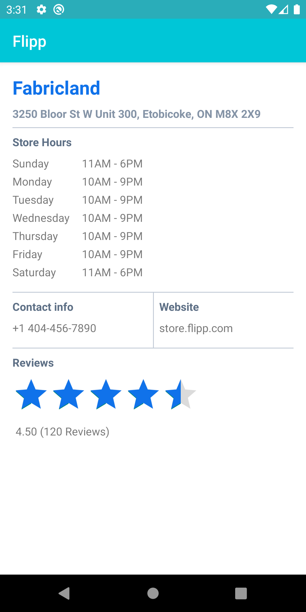

This practical codelab is the third installment of the Flipp Android Engineer Onboarding course. Other codelabs that are part of the course are as follows:
In this codelab you'll learn how to use the Room Persistence Library in the Flipp app. The Room Persistence Library provides an abstraction layer over SQLite to allow for more robust database access while harnessing the full power of SQLite.
The library helps you create a cache of your app's data on a device that's running your app. This cache, which serves as your app's single source of truth, allows users to view a consistent copy of key information within your app, regardless of whether users have an internet connection.
There are 3 major components in Room:
Database: Contains the database holder and serves as the main access point for the underlying connection to your app's persisted, relational data. The class that's annotated with @Database should satisfy the following conditions:
RoomDatabase.@Dao.At runtime, you can acquire an instance of Database by calling Room.databaseBuilder() or Room.inMemoryDatabaseBuilder().
Entity: Represents a table within the database.
DAO: Contains the methods used for accessing the database.
The app uses the Room database to get the data access objects, or DAOs, associated with that database. The app then uses each DAO to get entities from the database and save any changes to those entities back to the database. Finally, the app uses an entity to get and set values that correspond to table columns within the database.
ViewModel, LiveData and Repository.Store Info feature and implement a local cache using the Room persistence library to cache store information locally.Entity that represents StoreInfo objects.StoreInfoRepository class.The starter code for this codelab can be found here.
Create a class StoreInfoEntity in the package com.wishabi.flipp.app.storeinfo.data and add the required Room annotations.
@Entity(tableName = "store_info")
data class StoreInfoEntity(
@PrimaryKey var storeName: String,
var storeAddress: String,
var storeContactNumber: String,
var storeWebsite: String,
var storeRating: Float,
var storeNumReviews: Int)
Let's see what these annotations do.
Each @Entity class represents a SQLite table. Annotate your class declaration to indicate that it's an entity. You can specify the name of the table if you want it to be different from the name of the class. PrimaryKey Every entity needs a primary key. To keep things simple, store name acts as its own primary key. ColumnInfo(name = "storeName") Specifies the name of the column in the table if you want it to be different from the name of the member variable.
Every property that's stored in the database needs to have public visibility, which is the Kotlin default.
Next, Create a data class StoreHoursEntity in the package com.wishabi.flipp.app.storeinfo.data and add the following code to store the store hours data.
@Entity(tableName = "store_hours")
data class StoreHoursEntity(
@PrimaryKey(autoGenerate = true) val id: Int,
val dayIndex: Int,
val storeHours: String,
val storeName: String
)
The autoGenerate flag on the primary key annotation is used to generate unique keys. The StoreInfoEntity and the StoreHoursEntity tables are connected by the storeName property.
Finally, In order to query the StoreInfoEntity along with its StoreHours, you must first model the one-to-many relationship between the two entities. To do this, create a new data class StoreInfoWithHours in the package com.wishabi.flipp.app.storeinfo.data where each instance holds an instance of the parent entity and a list of all corresponding child entity instances. Add the @Relation annotation to the instance of the child entity, with parentColumn set to the name of the primary key column of the parent entity and entityColumn set to the name of the column of the child entity that references the parent entity's primary key.
data class StoreInfoWithHours(
@Embedded val storeInfo: StoreInfoEntity,
@Relation(
parentColumn = "storeName",
entityColumn = "storeName"
)
val storeHours: List<StoreHoursEntity>
)
In the DAO (data access object), you specify SQL queries and associate them with method calls. The compiler checks the SQL and generates queries from convenience annotations for common queries, such as @Insert. Room uses the DAO to create a clean API for your code.
The DAO must be an interface or abstract class.
By default, all queries must be executed on a separate thread.
Room has coroutines support, allowing your queries to be annotated with the suspend modifier and then called from a coroutine or from another suspension function.
First, let's write a DAO that provides a method to insert store info. Create a new Kotlin class file called StoreInfoDao in the package com.wishabi.flipp.app.storeinfo.data and copy paste the following code and fix the imports as neessary to make it compile.
@Dao
interface StoreInfoDao {
@Insert(onConflict = OnConflictStrategy.REPLACE)
suspend fun insert(storeInfo: StoreInfoEntity)
}
Let's walk through it:
StoreInfoDao is an interface; DAOs must either be interfaces or abstract classes.@Dao annotation identifies it as a DAO class for Room.suspend fun insert(storeInfo: StoreInfoEntity): Declares a suspend function to insert StoreInfo.@Insert annotation is a speical DAO method annotation where you don't have to provide any SQL!Next, Let's write a DAO that provides a method to insert store hours. Create a new Kotlin class file called StoreHoursDao in the package com.wishabi.flipp.app.storeinfo.data and copy paste the following code and fix the imports as necessary to make it compile.
@Dao
interface StoreHoursDao {
@Insert(onConflict = OnConflictStrategy.REPLACE)
suspend fun insert(storeHours: StoreHoursEntity)
}
Finally, let's add a method that returns an instance of the data class that pairs the parent entity (StoreInfo) and the child entity (StoreHours). This method requires Room to run two queries, so add the @Transaction annotation to this method to ensure that the whole operation is performed atomically. Open the class StoreInfoDao and add the following method:
@Transaction
@Query("SELECT * FROM store_info where storeName = :storeName")
suspend fun getStoreInfoWithHours(storeName: String): StoreInfoWithHours
SQLiteOpenHelper.LiveData, the queries are automatically run asynchronously on a background thread.Open class AppDatabase which is an abstract class that extends RoomDatabase. First, add the new two Entity classes to the entities array.
entities = {SearchMerchantsItem.class, Merchant.class, Flyer.class, TrendingSearch.class, LastVisitedMerchant.class, StoreInfo.class, StoreHours.class},
Next, add two abstract methods to fetch the two new DAOs you created, in the AppDatabase class.
public abstract StoreInfoDao storeInfoDao();
public abstract StoreHoursDao storeHoursDao();
As part of the first codelab in this series, you implemented a Repository which abstarcts out the data sources. The repository is not part of the Architecture components libraries, but it is a suggested best practice for code separation and architecture.
Open the file StoreInfoRepository and modify the function fetchStoreInfo() to now work with the database along with the api call. For the sake of the codelab and to limit the complexity, you are going to implement the follwing requirements:
StoreInfo over the network using our existing retrofit service. (same as before)StoreInfo object into StoreInfoEntity and store it to the database using the StoreInfoDao.StoreHoursEntity objects from the list of store hours you receive from the API, and insert the list into database using the StoreHoursDao.StoreInfoWithHours using the StoreInfoDao.StoreInfo to StoreInfoWithHours.Here is the complete code for the method:
suspend fun fetchStoreInfo(postalCode: String, storeName: String): StoreInfoWithHours {
val storeInfoApiService = ServiceManager.getService(RetrofitProvider::class.java)
.getRetrofitStoreInfoService()
val storeInfo = storeInfoApiService.getStoreInfo()
// Hack for the purposes of the codelab
storeInfo.storeName = storeName
// Store locally
val appDatabase = ServiceManager.getService(FlippRepository::class.java).database
appDatabase.storeInfoDao().insert(storeInfo.getEntity())
appDatabase.storeHoursDao().insert(storeInfo.getStoreHours())
return appDatabase.storeInfoDao().getStoreInfoWithHours(storeName)
}
However, to get the code to compile, you would need to add two additional functions to the StoreInfo.
getEntity(): This would convert a StoreInfo object to a StoreInfoEntity object.getStoreHours(): This would convert the list of store hours in StoreInfo to a list of StoreHoursEntity objects.To avoid the StoreInfo class from knowing abour Room entities, add these methods as extension functions.
Next, open the file Extensions.kt and add the following two methods.
fun StoreInfo.getStoreHours(): List<StoreHoursEntity> {
val hoursList = mutableListOf<StoreHoursEntity>()
this.storeHours.forEachIndexed { index, hours ->
val storeHour = StoreHoursEntity(id = 0, dayIndex = index, storeHours = hours, storeName = storeName)
hoursList.add(storeHour)
}
return hoursList
}
fun StoreInfo.getEntity() = StoreInfoEntity(storeName, storeAddress, storeContactNumber, storeWebsite, storeRating, storeNumReviews)
Now that your repository is ready, you need to update the StoreInfoActivityViewModel. Currently, the viewmodel is accepting a StoreInfo object from the repository and updating its LiveData fields.
Modify the fetchStoreInfo() method to accept an object of StoreInfoWithHours from the repository and update its LiveData fields accordingly.
Here is the complete code for the method:
fun fetchStoreInfo(postalCode: String?, storeName: String?) {
if (postalCode.isNullOrEmpty() || storeName.isNullOrEmpty()) {
_storeInfo.postValue(Error("Invalid postal code or store name"))
return
}
if (_storeInfo.value is Success
&& this.postalCode.equals(postalCode, ignoreCase = true)
&& this.storeName.equals(storeName, ignoreCase = true)) {
return
}
loadingLiveData.postValue(true)
this.postalCode = postalCode
this.storeName = storeName
viewModelScope.launch {
try {
val storeInfoWithHours = repository.fetchStoreInfo(postalCode, storeName)
val storeInfo = storeInfoWithHours.storeInfo
val storeHours = storeInfoWithHours.storeHours
storeNameLiveData.postValue(storeInfo.storeName)
storeAddressLiveData.postValue(storeInfo.storeAddress)
sundayStoreHoursLiveData.postValue(storeHours[0].storeHours)
mondayStoreHoursLiveData.postValue(storeHours[1].storeHours)
tuesdayStoreHoursLiveData.postValue(storeHours[2].storeHours)
wednesdayStoreHoursLiveData.postValue(storeHours[3].storeHours)
thursdayStoreHoursLiveData.postValue(storeHours[4].storeHours)
fridayStoreHoursLiveData.postValue(storeHours[5].storeHours)
saturdayStoreHoursLiveData.postValue(storeHours[6].storeHours)
storeWebsiteLiveData.postValue(storeInfo.storeWebsite)
storeContactNumberLiveData.postValue(storeInfo.storeContactNumber)
storeRatingLiveData.postValue(storeInfo.storeRating)
storeNumReviewsLiveData.postValue(storeInfo.storeNumReviews)
loadingLiveData.postValue(false)
} catch (e: Exception) {
_storeInfo.postValue(Error("There was an error fetching store information"))
loadingLiveData.postValue(false)
}
}
}
Compile and run the app. Now you should see the following screen after following the below steps:
View Store Info menu option.You should now see a page similar to the below screenshot.

The final solution for this codelab can be found here.